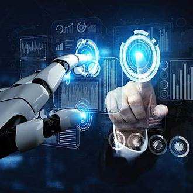

|
En TechForge, estamos a la vanguardia de la tecnología, ofreciendo soluciones de Inteligencia Artificial (IA) y automatización que transforman la manera en que las empresas operan, mejorando la eficiencia y reduciendo costos. Servicios Ofrecidos
Beneficios de Nuestras Soluciones
|
 |
Casos de ÉxitoHemos colaborado con diversas empresas para implementar soluciones de IA y automatización. Por ejemplo, una empresa de logística logró reducir sus tiempos de entrega en un 25% gracias a nuestras soluciones de optimización de rutas. |
Transforme su Negocio HoyNo se quede atrás en la revolución tecnológica. Contáctenos hoy para descubrir cómo nuestras soluciones de Inteligencia Artificial y automatización pueden impulsar su negocio al siguiente nivel. |